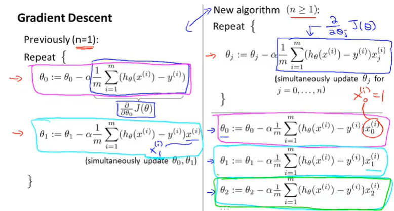
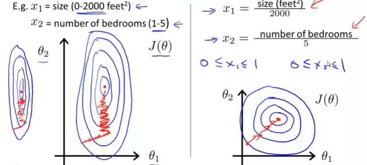
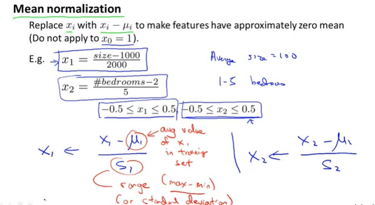
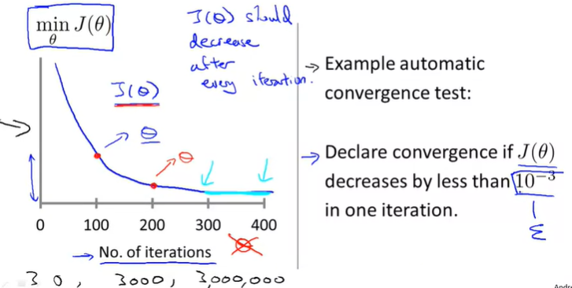
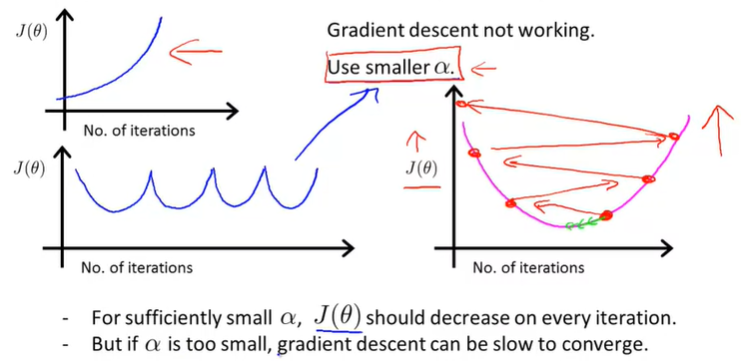
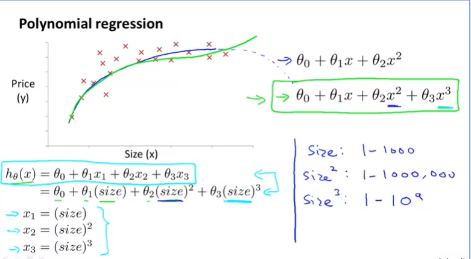
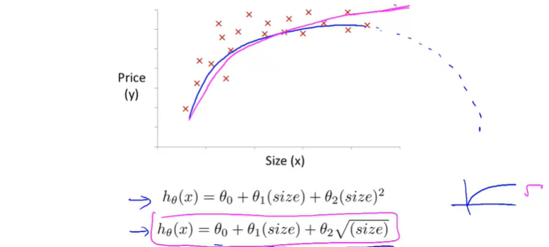
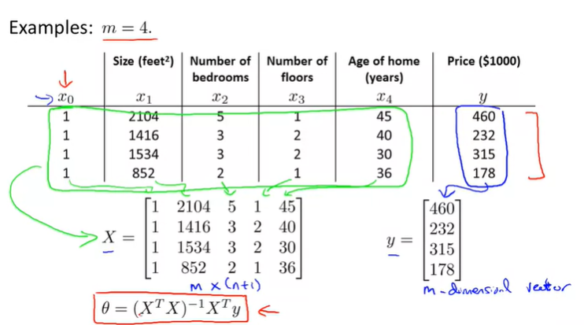
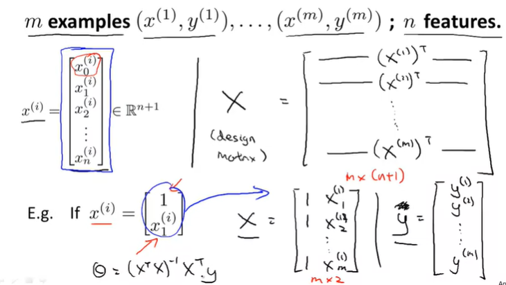
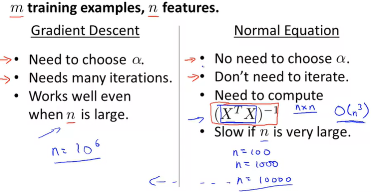

Week2
Multiple features (variables)
x1 x2 x3 x4 y
.
.
.
m times (m=47)
n :number of features ( like size, no of bedrooms, no of floors, age of home)
x(i) :input (features) of ith training example
x(j,i) :value of feature of j in ith training example
hypothesis
h(x) = O1 + O2*x earlier
but now, h(x) = O1 + O2*x1 + O3*x2 + ...
Linear regression with multiple variables is also known as multivariate linear regression
x(
i) =value of feature
j in the
ith training example
jx(
i) =the input (features) of the
ith training example
m =the number of training examples
n =the number of features
hθ(
x)=
θ0+
θ1
x1+
θ2
x2+
θ3
x3+⋯+
θn
xn
vectorization of our hypothesis function
gradient descent for multiple variable
Feature scaling : gradient descent in practice I
idea : make sure features are on a similar scale
i.e x1 = size ( 0-2000 )
x2 = no of bedrooms (1-5)
if we plot the contour of the cos function J
θ  on the left image, the global minima takes more time to be found. due to narrow contour lines and variable gaps
where as the image on the right will be give better solutiona as it equally arranged for the minima
we should get every feature into approx. a -1 <= x(i) <= 1 range
make sure the range is [-1,1] and have reasonale decimal value
Another way is to use :
Mean Normalization
Replace the x(i) with x(i) - U(i) to make features have approx zero mean ( do not apply x(0) =1)
Mean normalization involves subtracting the average value for an input variable from the values for that input variable resulting in a new average value for the input variable of just zero
Learning rate : gradient descent in practice II
debugging to make sure the gradient descent is working i.e choose learning rate
if a is too small : slow convergence
...0.001... 0.01...0.1....1...
Features and Polynomial regression
suppose two features are length and breadth
we can consider one feature Area for the above ; understand the need of and relation of features for optimization
 problem : A quadratic function is increasing but may decrease later
So, implement different choice of features or implement change in function
choice of feature
Computing Parameters analytically
Normal Equation
method to solve for Theta analytically - i.e in one step instead of iterative
In the "Normal Equation" method, we will minimize J by explicitly taking its derivatives with respect to the θj ’s, and setting them to zero. This allows us to find the optimum theta without iteration. The normal equation formula is given below:
θ= (X^T * X)^(-1) * (X^T) *y
no need of feature scaling with normal equation
Normal Equation Invertibity
if the matrix is invertible ( X^T * X )
this is caused due to :
1. reduntant features (linearly dependent)
two features are very closely related
2. too many features (m>=n)
delete some features or use regularization
When implementing the normal equation in octave we want to use the 'pinv' function rather than 'inv.' The 'pinv' function will give you a value of \theta
θ even if X^TX
XTX is not invertible